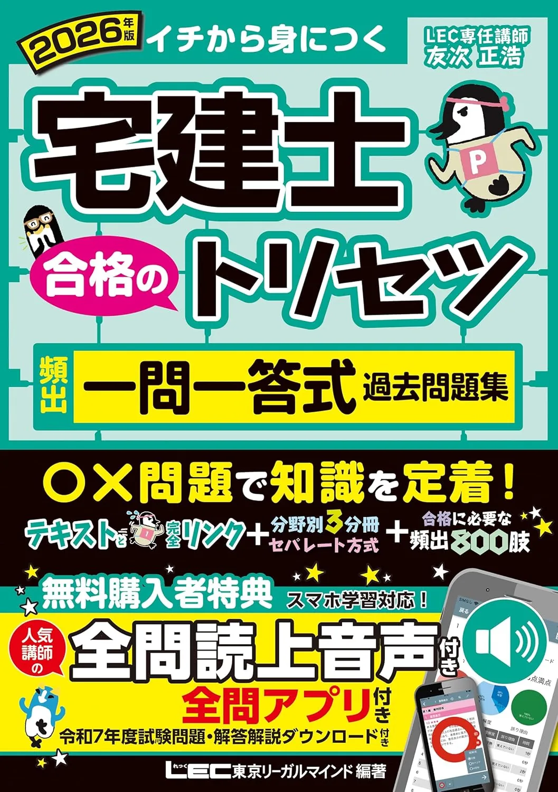
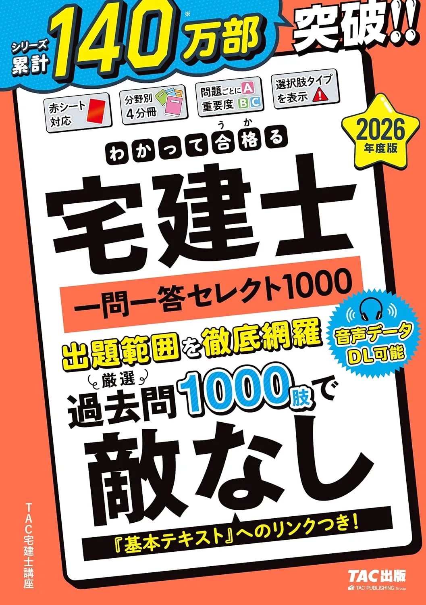

宅建士の模試・一問一答3選【厳選模試・セレクト1000・2026】
模試・一問一答3冊を、直前期の使い方の違いで比較します。本記事には広告・アフィリエイトリンクが含まれます。価格・在庫は購入前に各Amazonページでご確認ください。
この記事の要点
本記事を読むと、模試・一問一答3冊の用途の違いが分かり、たとえば「8月23日から土曜120分模試→9月20日から通勤15分×5短問」まで具体例付きで直前計画を組めます。
- 「2026年版 出る順宅建士 過去30年良問厳選模試」
- 「2026年版 宅建士 合格のトリセツ 頻出一問一答式過去問題集」
- 「2026年度版 わかって合格る宅建士 一問一答セレクト1000」
- 8週前から模試
- 4週前から短問
この記事の信頼性について
| 執筆 | 宅建マスター編集部（資格学習サイトの編集チーム） |
|---|---|
| 確認 | 公式情報確認担当（公開前に一次情報との照合を行う担当者） |
| 事実確認日 | 2026-06-11 |
| 主な参照元 |
1直前期：模試と一問一答の段階
模試・一問一答は、テキストと過去問で固めた論点を本番の時間感覚や短問演習量で確認するためのものです。たとえば9月初旬に通し50問120分を2回終えた後——8月23日から週1回の模試、9月20日から短問増、という順序が安全です。
| 段階 | 教材の役割 |
|---|---|
| 1 | 本格テキストで4分野の条文理解 |
| 2 | 問題集1冊で通し・分野別演習 |
| 3 | 模試で120分・50問の時間配分 |
| 4 | 一問一答で頻出論点の穴埋め |
模試だけで完走しようとせず、誤答は必ずテキストまたは問題集へ接続してください。模試の回数・点数の見方は模擬試験活用法のガイドで詳述しています。
模試・一問一答3選（比較）
価格は執筆時点（2026-06-04）のAmazon税込参考です。試験日程・出題範囲は公益財団法人 不動産適正取引推進機構（宅建試験・公式）で必ず確認してください。
| 順位 | 商品名 | 価格（税込参考） | ページ数 | 向いている人 |
|---|---|---|---|---|
| 1 | 2026年版 出る順宅建士 過去30年良問厳選模試 | ¥2,750 | 483 | 本試験直前に模試形式で時間配分を確認したい人 |
| 2 | 2026年版 宅建士 合格のトリセツ 頻出一問一答式過去問題集 | ¥2,200 | 417 | LECトリセツで短問演習量を確保したい人 |
| 3 | 2026年度版 わかって合格る宅建士 一問一答セレクト1000 | ¥2,750 | 700 | TAC系教材で一問一答総仕上げをしたい人 |
2026年版 出る順宅建士 過去30年良問厳選模試
- 過去30年から厳選した模試形式の演習
- 出る順シリーズの総仕上げ向け
- 時間を計って解く練習に向く

2026年版 宅建士 合格のトリセツ 頻出一問一答式過去問題集
- 読上音声付きでスキマ時間学習に向く
- 頻出論点を一問一答形式で総復習
- 厳選分野別過去問題集との使い分けが明確

2026年度版 わかって合格る宅建士 一問一答セレクト1000
- 厳選1000問で演習量を確保
- 音声データDL付きで復習しやすい
- TAC教科書・論点別過去問との併用例が多い
23冊の用途：8週前と4週前の使い分け
2026年度版3冊の用途の違いです。例えば8月下旬から出る順厳選模試を週1回、9月下旬からLEC頻出一問一答を通勤15分×5——という段階追加が予算を抑えつつ効果的です。
| 教材 | 主な用途 |
|---|---|
| 出る順 過去30年良問厳選模試 | 直前の本試験形式演習 |
| LEC 頻出一問一答 | スキマ時間の短問・音声復習 |
| TAC 一問一答セレクト1000 | TAC系で短問量を一気に増やす |
いずれも年度版を選び、一問一答は1冊から始めて80％使い切ってから次を検討してください。時間配分の設計は時間配分ガイドも参照してください。
31位 出る順模試：土曜120分×8週
「2026年版 出る順宅建士 過去30年良問厳選模試」（LEC・B5判）は、直前期の本試験形式演習向けです。たとえば8月23日から土曜120分で通し50問、翌週月曜に誤答分野をテキスト該当章へ——8週連続で時間配分を記録する設計が定番です。
| 強み | 弱み・注意 |
|---|---|
| 120分・50問の時間計測向き | テキスト未読では解説が追いにくい |
| 出る順シリーズと章立て相性◎ | 単体では条文の深読み不足 |
| 直前の総仕上げ向き | 価格はAmazonで要確認 |
模試後は4分野別に誤答を分類し、36点未満が2回続いた分野は翌週+10問追加してください。目標点設計は合格点ガイドを参照してください。
42位 LEC一問一答：通勤15分×5
「2026年版 宅建士 合格のトリセツ 頻出一問一答式過去問題集」（LEC・B5判）は、読上音声付きでスキマ時間の短問演習に向きます。例えば9月20日から平日15分×5で10問、3日後に誤答5問だけ解き直し——というサイクルで数字・用語を維持できます。
| 強み | 弱み・注意 |
|---|---|
| 通勤・昼休みの短問向き | 事例・条文の深読みは別冊 |
| トリセツ基本と縦串 | 正答率70％超でも通し50問要確認 |
| 頻出論点の穴埋め | 価格はAmazonで要確認 |
正答率が上がっても模試側で時間配分が崩れないか、10月初旬の通し50問120分で必ず確認してください。
53位 TACセレクト1000：TAC系短問量
「2026年度版 わかって合格る宅建士 一問一答セレクト1000」（TAC出版・B5判）は、TAC系テキスト・論点別過去問との併用例が多い定番です。たとえば9月中旬から平日20分×5で15問、土曜模試前日は業法・権利の短問20問——という配分がTAC縦串と相性がよいです。
| 強み | 弱み・注意 |
|---|---|
| 短問1000問で演習量確保 | 通し模試は別冊が必要 |
| 論点別過去問と接続◎ | 同時に3冊開くと復習分散 |
| 業法・権利の頻出を網羅 | 価格はAmazonで要確認 |
直前2週間は新規短問を増やさず、誤答解き直しと50問120分模試に集中——直前対策のガイドと併せて10月18日から逆算してください。
6よくある質問
模試・一問一答だけで合格できますか？
模試と一問一答、両方買いますか？
いつから模試・一問一答に入ればよいですか？
記事の基本情報
| ジャンル | 学習計画 |
|---|---|
| タグ | 独学 / 参考書 |
公式情報の確認
公式情報の確認：宅地建物取引士試験の最新情報は、不動産適正取引推進機構（RETIO）などの公式情報を必ず確認してください。本人に割り当てられた試験会場は受験票の表記が正本です。